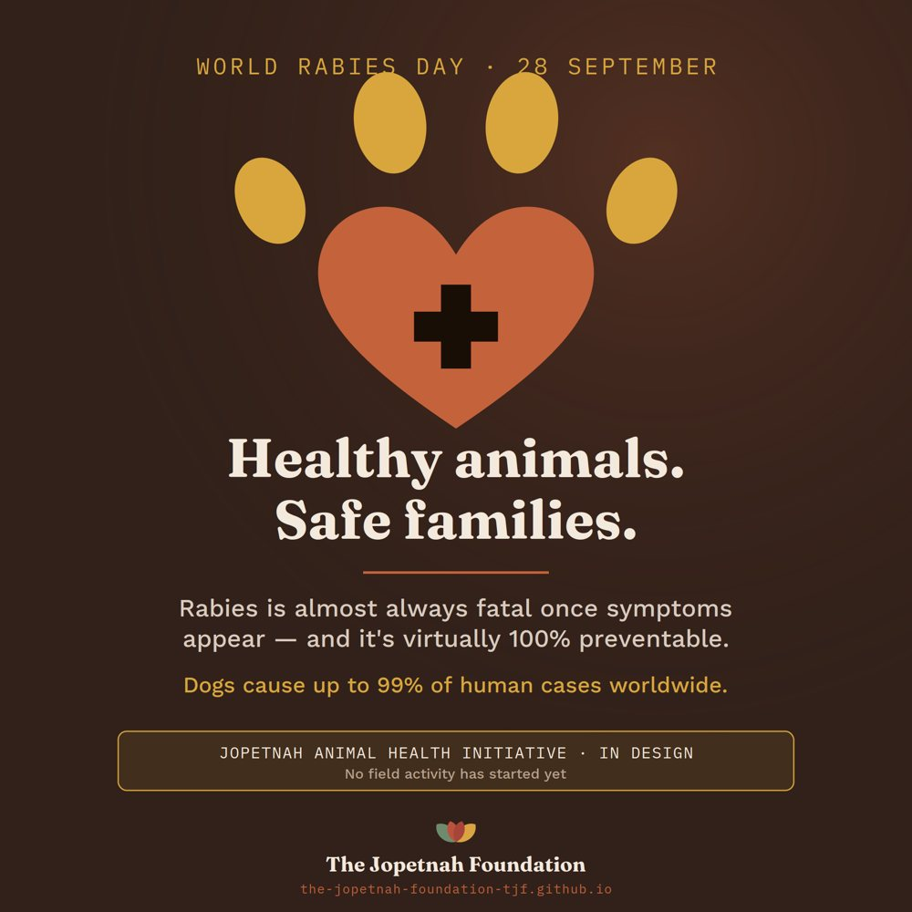

Rabies is preventable, yet it still kills people in Uganda, almost always after a dog bite.
The Jopetnah Animal Health Initiative is our plan to protect families by vaccinating community
dogs and cats, training local animal-health workers and linking bite victims to treatment.
Our approach:
We treat the health of household animals as a public-health, livelihood and household-stability
issue. Vaccination and community trust come first. We do not cull dogs, because culling destroys
the trust that prevention depends on.
Current status:
In design. We are developing partnerships and preparing a pilot in northern Uganda. We are not yet
vaccinating animals, and we are not accepting donations for this initiative. The Foundation's legal
registration in Uganda is in progress.
Illustrative image (Unsplash). It does not show TJF activities, staff or beneficiaries.
Why it matters
A preventable disease that still takes lives.
Once symptoms appear, rabies is almost always fatal. It can be prevented, and the most effective way
to stop it is to vaccinate dogs, which cause more than 99% of human cases worldwide, and to make sure
anyone who is bitten reaches treatment quickly.
Uganda has a national plan to eliminate dog-mediated rabies, in line with the global Zero by 30 goal.
Delivering it in remote districts depends on local partners who can reach households, keep vaccines
cold and report bites. That is the gap this initiative is designed to help close.
What the evidence says
190recorded human rabies deaths in Uganda between 2021 and 2024. Surveillance is weak, so few cases are recorded.
About 90%of Ugandans live in areas where dogs can transmit rabies, while dog vaccination and access to treatment remain low.
2030the global goal to end human deaths from dog-mediated rabies, set by WHO, FAO, WOAH and GARC (Zero by 30).
2025–2030Uganda's National Rabies Elimination Strategy, published jointly by the Ministry of Agriculture, Animal Industry and Fisheries and the Ministry of Health.
Sources: Okech et al., Frontiers in Tropical Diseases (2025); Uganda rabies information project;
Ministry of Agriculture, Animal Industry and Fisheries; WHO. Facts last checked 20 September 2026.
Our plan
Vaccinate, train, connect and learn.
Four proposed program strands, designed to work through existing health and community structures
rather than alongside them.
Design Stage
Rabies Zero
A proposed vaccination and bite-response program for dogs and cats, run from or alongside health centres. A 2025 Ugandan pilot found this approach reached the highest coverage.
Focus
Dog and cat vaccination campaigns
Bite response: awareness, referral, treatment support and reporting
Data shared with district veterinary and health officers
Design Stage
Community Animal Health Workers
Local workers trained, equipped and supervised to deliver routine vaccination and basic care, earning a fair income so services continue after any grant ends.
Focus
Community nomination and training
Starter kits and cold-chain equipment
Referral to licensed veterinarians
Rabies vaccination free; basic treatment low-cost
Design Stage
Schools and Faith Communities
Bite prevention, first aid and basic animal care taught through schools and faith communities. Children are among those most affected, so schools are a natural place to start.
Focus
Bite-prevention and first-aid sessions
School-based vaccination days
Community and faith-leader awareness events
Design Stage
Evidence and Partnerships
A baseline study, simple monitoring and a university partnership to measure what changes and to share results with district and national authorities.
Focus
Baseline study of dog ownership, bites and costs
Clinical leadership through a veterinary partner
Learning shared openly, including what does not work
Indicative pilot goals (subject to funding & partnerships):
Reach at least 65% dog vaccination coverage in each pilot district (aiming for 70%), train and equip
30–45 Community Animal Health Workers, and support at least 80% of reported bite cases to complete
post-exposure treatment. Targets will be confirmed after a baseline study. We aim to contribute to
Uganda's national elimination target, not to claim it alone.
How it fits
A One Health thread, not a fifth pillar.
The health of people, animals and the environment is connected. The initiative runs through
The Jopetnah Foundation's four pillars, so the same families can benefit from support across
their whole lives, in line with our integrated model.
Health & Wellbeing
Vaccination, bite response and referral sit alongside Community Health Champions and Mobile Wellness Clinics.
Education & Youth Development
School sessions teach bite prevention and first aid.
Livelihoods
Community Animal Health Workers build local skills, income and small enterprises.
Environment & Community Development
Stray-animal and waste management links to community clean-up work.
Safety first
If you or someone you know is bitten.
Wash the wound straight away with soap and running water for at least 15 minutes.
Go to the nearest health facility right away, even if the wound looks small, so a health worker can decide on post-exposure treatment.
Do not wait for symptoms. Rabies treatment works only before symptoms begin.
Tell the local veterinary or health officer about the animal.
This is general guidance and not a substitute for medical advice. Follow the instructions of your local health workers.

Our World Rabies Day awareness graphic (28 September). The initiative is still in design.Where we stand
We will tell you exactly where we are.
This page keeps plans, pilot activity and documented results separate, and we will update it as each
stage is reached.
Now
Design and partnership development
The initiative and a pilot plan are being designed. We are looking for clinical, academic and district partners. At this stage we publish plans only.
Next
Partners agreed
A clinical partner and district agreements are in place. We will name partners here once they have agreed.
Then
Pilot funded
Funding is secured for the first phase. We will announce the districts and start date.
Then
Pilot running
Vaccination and training are under way. We will publish activity counts, such as animals vaccinated and workers trained.
Later
Results published
Coverage and outcomes are measured and checked. We will publish results and lessons, including what did not work.
Progress log
Initiative page published. The initiative is in design and no field activity has started.
Note:
Timing depends on the Foundation's legal registration, partner agreements and funding. Targets, budgets and
implementation status will be adapted to technical advice, safeguarding requirements, regulatory approvals
for animal vaccines and medicines, and local authorities' priorities.
Get involved
Help us start responsibly.
We are not asking for donations for this initiative yet. We are looking for partners and advisors
who can help us build it properly before any animal is vaccinated.
What we are looking for
A veterinary or clinical partner to lead animal-health protocols
A university partner in veterinary science or public health
Rabies vaccine and cold-chain equipment as in-kind support
Introductions to district veterinary and health offices
Veterinary and public-health advisors
Partner With TJF
Healthy animals. Safe families.
Tell us how you could help, or share this page with someone who works in veterinary medicine,
public health or rabies control.